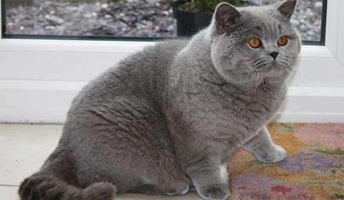
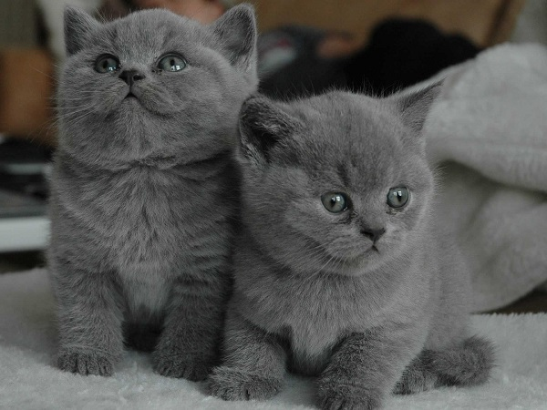

Mèo Anh lông ngắn

Đặc điểm mèo anh lông ngắn
Cũng giống như mèo Anh lông dài, dòng lông ngắn này cũng có xuất xứ
từ Anh quốc. Chú mèo đáng yêu sở hữu tính cách khá hiền hòa, trầm tính, thích chơi một mình và
không ưa leo trèo, nhảy nhót. Đặc biệt, mèo Anh lông ngắn rất biết nghe lời và thích được chủ
vuốt ve.
Đặc điểm của mèo Anh lông ngắn là thân hình cơ bắp, khung xương chắc chắn, khỏe mạnh với chiếc
đầu to tròn, má rộng, mũi miệng ngắn, mắt to màu đồng, xanh lá cây hoặc đen. Nổi bật nhất là bộ
lông tuy ngắn nhưng rất dày và không xù, giúp cơ thể giữ ấm. Bên cạnh một số màu như đen, xám,
xanh dương, vàng thì lông màu xám là phổ biến nhất.
Chúng hay được gọi tắt là Aln.

Giá bán mèo aln tham khảo
Aln thuần chủng có giấy tờ nhập ngoại Từ 20-40 triệu đồng.
Aln thuần chủng việt nam có giấy tờ: giá 10-20 triệu
Aln có giấy tờ gia phả, màu lông đẹp: dao động 6-10 triệu
Aln không giấy tờ, các bé màu đẹp, form chuẩn: 4-7 triệu
Các bé lai linh tinh: 1,5-3 triệu
Mấy con này nuôi thích cực. Lông ngắn nên rụng ít. Mặt lại ngu ngu, cho nó hít tí cỏ là ngộ méo
yêu thương được luôn các bạn à.
Đây là con mèo anh lông ngắn nhà mình nuôi. Béo Vl. Ngoài ra còn 5 bé nữa nhưng mình chưa quay
hết lên.